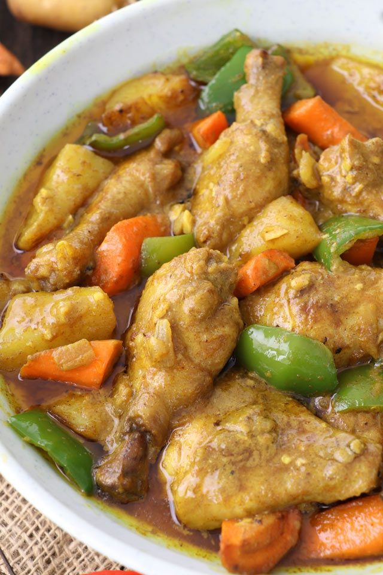

A classic Filipino comfort food, featuring tender chicken pieces braised in a rich,
savory sauce of soy sauce and vinegar. This dish is aromatic and full of bold, complex flavors that are a true taste of home.
Chicken Adobo

A platter of crispy, bite-sized chicken pieces, topped with vibrant green onions,
served with a side of dipping sauce. This dish is a perfect mix of crunchy texture and savory flavor.
Fried Chicken

Variety pack with spicy and golden-brown wings, great for parties and mixed cravings.
Fried Chicken Wings

Smoky, tangy grilled chicken pieces. Ideal for gatherings with grilled favorites.
Chicken Inasal

A rich and creamy Filipino stew, this dish features tender chicken chunks simmered in coconut milk and spiced with an
abundance of green chilies and red bell peppers. It is a hearty and flavorful dish inspired by the spicy cuisine of the Bicol region.
Chicken Bicol Express

A creamy and mildly spicy chicken stew with potatoes and carrots simmered in a rich curry sauce. It's a comforting and aromatic dish perfect for sharing.
Chicken Curry

A savory-sweet delight, these chicken wings are glazed in a sticky, rich honey-bbq sauce and topped with fresh green onions. They're a perfect crowd-pleaser for any event.
Honey Bbq Chicken

A stir-fried dish with chicken strips, vegetables, and sometimes rice noodles, perfect for a filling meal.
Chicken Stir-fry